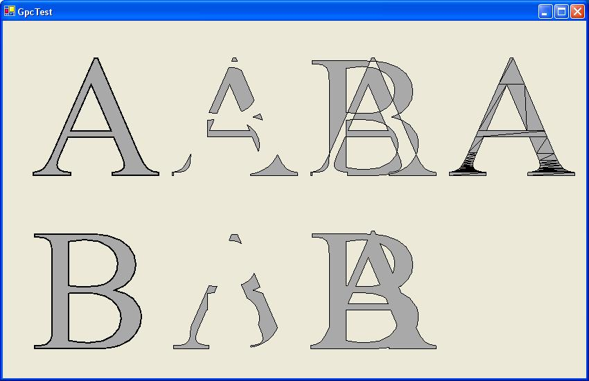

The Application GpcTest shows how to use the GpcWrapper.
First you have to add the Namespace GpcWrapper:
using GpcWrapper;
The main work of GpcTest is done in the OnPaint method.
First two characters 'A' and 'B' are drawn:
GraphicsPath p = new GraphicsPath(); // draw A p.AddString( "A", fontFamily, 0, 250, new Point( 0, 0 ), new StringFormat() ); p.Flatten( new Matrix(), flatness ); e.Graphics.FillPath( Brushes.DarkGray, p ); e.Graphics.DrawPath( new Pen(Color.Black,2.0F), p ); // draw B p.AddString( "B", fontFamily, 0, 250, new Point( 0, 250 ), new StringFormat() ); p.Flatten( new Matrix(), flatness ); e.Graphics.FillPath( Brushes.DarkGray, p ); e.Graphics.DrawPath( new Pen(Color.Black,2.0F), p );
Now two Polygons are created. The Polygon-class is defined in the GpcWrapper Namespace and corresponds to the struct gpc_polygon of the gpc-library. The Polygons are converted from a GraphicsPath object. Notice that this converting is only possible if the GraphicsPath-object don't contains any curves. Therefore the GraphicsPath first is converted into Polylines by using the Flatten-Method:
// create polygonA p = new GraphicsPath(); p.AddString( "A", fontFamily, 0, 250, new Point( 0, 0 ), new StringFormat() ); p.Flatten( new Matrix(), flatness ); Polygon polygonA = new Polygon( p ); // create polygonB p = new GraphicsPath(); p.AddString( "B", fontFamily, 0, 250, new Point( 0, 0 ), new StringFormat() ); p.Flatten( new Matrix(), flatness ); Polygon polygonB = new Polygon( p );
Afterwards the saving, loading and converting to a tristrip is demonstrated.
// Save and Load
polygonA.Save( "A.plg", true );
Polygon loadedPolygon = Polygon.FromFile( "A.plg", true );
// create Tristrip
Tristrip tristrip = polygonA.ToTristrip();
for ( int i =0 ; i<tristrip.NofStrips ; i++ ) {
VertexList vertexList = tristrip.Strip[i];
GraphicsPath path = vertexList.TristripToGraphicsPath();
Matrix m = new Matrix();
m.Translate( 600, 0 );
path.Transform( m );
e.Graphics.FillPath( Brushes.DarkGray, path );
e.Graphics.DrawPath( Pens.Black, path );
}
Finally the gpc-funtion gpc_polygon_clip is demonstrated by calling the Clip-Method of the Polygon class for all of the four Operations:
PointF[] upperLeftCorner= new PointF[]{ new PointF(200,0), new PointF(200,250), new PointF(400,0), new PointF(400,250) };
int position = 0;
foreach ( GpcOperation operation in Enum.GetValues( typeof(GpcOperation)) ) {
Polygon polygon = polygonA.Clip( operation, polygonB );
GraphicsPath path = polygon.ToGraphicsPath();
Matrix m = new Matrix();
m.Translate( upperLeftCorner[position].X, upperLeftCorner[position].Y );
path.Transform( m );
e.Graphics.FillPath( Brushes.DarkGray, path );
e.Graphics.DrawPath( Pens.Black, path );
position++;
}